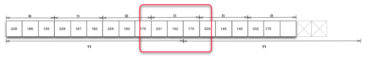

作为前端的JSer，是一件非常幸福的事情，因为在字符串上从来没有出现过任何纠结的问题。我们来看看PHP对字符串长度的判断结果：
<? php
echo strlen("0123456789");
echo strlen("零一二三四五六七八九");
echo mb_strlen("零一二三四五六七八九", "utf-8");
echo "\n";
以上三行判断分别返回10、30、10。对于中国人而言，strlen这个方法对于Unicode的判断结果是非常让人疑惑。而看看JavaScript中对字符串长度的判断，就知道这个length属性对调用者而言是多么友好。
console.log("0123456789".length); // 10
console.log("零一二三四五六七八九".length); /10
console.log("\u00bd".length); // 1
尽管在计算机内部，一个中文字和一个英文字占用的字节位数是不同的，但对于用户而言，它们拥有相同的长度。我认为这是JavaScript中 String处理得精彩的一个点。正是由于这个原因，所有的数据从后端传输到前端被调用时，都是这般友好的字符串。所以对于前端工程师而言，他们是没有字 符串Buffer的概念的。如果你是一名前端工程师，那么从此在与Node.js打交道的过程中，一定要小心Buffer啦，因为它比传统的String 要调皮一点。
像许多计算机的技术一样，都是从国外传播过来的。那些以英文作为母语的传道者们应该没有考虑过英文以外的使用者，所以你有可能看到如下这样一段代码在向你描述如何在data事件中连接字符串。
var fs = require('fs');
var rs = fs.createReadStream('testdata.md');
var data = '';
rs.on("data", function (trunk){
data += trunk;
});
rs.on("end", function () {
console.log(data);
});
如果这个文件读取流读取的是一个纯英文的文件，这段代码是能够正常输出的。但是如果我们再改变一下条件，将每次读取的buffer大小变成一个奇数，以模拟一个字符被分配在两个trunk中的场景。
var rs = fs.createReadStream('testdata.md', {bufferSize: 11});
我们将会得到以下这样的乱码输出：
事件循���和请求���象构成了Node.js���异步I/O模型的���个基本���素，这也是典���的消费���生产者场景。
造成这个问题的根源在于data += trunk语句里隐藏的错误，在默认的情况下，trunk是一个Buffer对象。这句话的实质是隐藏了toString的变换的：
data = data.toString() + trunk.toString();
由于汉字不是用一个字节来存储的，导致有被截破的汉字的存在，于是出现乱码。解决这个问题有一个简单的方案，是设置编码集：
var rs = fs.createReadStream('testdata.md', {encoding: 'utf-8', bufferSize: 11});
这将得到一个正常的字符串响应：
事件循环和请求对象构成了Node.js的异步I/O模型的两个基本元素，这也是典型的消费者生产者场景。
遗憾的是目前Node.js仅支持hex、utf8、ascii、binary、base64、ucs2几种编码的转换。对于那些因为历史遗留问题依旧还生存着的GBK，GB2312等编码，该方法是无能为力的。
在这个例子中，如果仔细观察，会发现一件有趣的事情发生在设置编码集之后。我们提到data += trunk等价于data = data.toString() + trunk.toString()。通过以下的代码可以测试到一个汉字占用三个字节，而我们按11个字节来截取trunk的话，依旧会存在一个汉字被分割在两个trunk中的情景。
console.log("事件循环和请求对象".length);
console.log(new Buffer("事件循环和请求对象").length);
按照猜想的toString()方式，应该返回的是事件循xxx和请求xxx象才对，其中“环”字应该变成乱码才对，但是在设置了encoding（默认的utf8）之后，结果却正常显示了，这个结果十分有趣。

在好奇心的驱使下可以探查到data事件调用了string_decoder来进行编码补足的行为。通过string_decoder对象输出第一个截取Buffer(事件循xx)时，只返回事件循这个字符串，保留xx。第二次通过string_decoder对象输出时检测到上次保留的xx，将上次剩余内容和本次的Buffer进行重新拼接输出。于是达到正常输出的目的。
string_decoder，目前在文件流读取和网络流读取中都有应用到，一定程度上避免了粗鲁拼接trunk导致的乱码错误。但是，遗憾在于string_decoder目前只支持utf8编码。它的思路其实还可以扩展到其他编码上，只是最终是否会支持目前尚不可得知。
那么万能的适应各种编码而且正确的拼接Buffer对象的方法是什么呢？我们从Node.js在github上的源码中找出这样一段正确读取文件，并连接buffer对象的方法：
var buffers = [];
var nread = 0;
readStream.on('data', function (chunk) {
buffers.push(chunk);
nread += chunk.length;
});
readStream.on('end', function () {
var buffer = null;
switch(buffers.length) {
case 0: buffer = new Buffer(0);
break;
case 1: buffer = buffers[0];
break;
default:
buffer = new Buffer(nread);
for (var i = 0, pos = 0, l = buffers.length; i < l; i++) {
var chunk = buffers[i];
chunk.copy(buffer, pos);
pos += chunk.length;
}
break;
}
});
在end事件中通过细腻的连接方式，最后拿到理想的Buffer对象。这时候无论是在支持的编码之间转换，还是在不支持的编码之间转换（利用iconv模块转换），都不会导致乱码。
上述一大段代码仅只完成了一件事情，就是连接多个Buffer对象，而这种场景需求将会在多个地方发生，所以，采用一种更优雅的方式来完成该过程是必要的。笔者基于以上的代码封装出一个bufferhelper模块，用于更简洁地处理Buffer对象。可以通过NPM进行安装：
npm install bufferhelper
下面的例子演示了如何调用这个模块。与传统data += trunk之间只是bufferHelper.concat(chunk)的差别，既避免了错误的出现，又使得代码可以得到简化而有效地编写。
var http = require('http');
var BufferHelper = require('bufferhelper');
http.createServer(function (request, response) {
var bufferHelper = new BufferHelper();
request.on("data", function (chunk) {
bufferHelper.concat(chunk);
});
request.on('end', function () {
var html = bufferHelper.toBuffer().toString();
response.writeHead(200);
response.end(html);
});
}).listen(8001);
所以关于Buffer对象的操作的最佳实践是：
田永强，新浪微博@朴灵，前端工程师，曾就职于SAP，现就职于淘宝，花名朴灵，致力于NodeJS和Mobile Web App方面的研发工作。双修前后端JavaScript，寄望将NodeJS引荐给更多的工程师。兴趣：读万卷书，行万里路。个人Github地 址：http://github.com/JacksonTian。
感谢崔康对本文的审校。
给InfoQ中文站投稿或者参与内容翻译工作，请邮件至editors@cn.infoq.com。也欢迎大家通过新浪微博（@InfoQ）或者腾讯微博（@InfoQ）关注我们，并与我们的编辑和其他读者朋友交流。
您好，朋友！
您需要 注册一个InfoQ账号 或者 登录 才能进行评论。在您完成注册后还需要进行一些设置。获得来自InfoQ的更多体验。
告诉我们您的想法